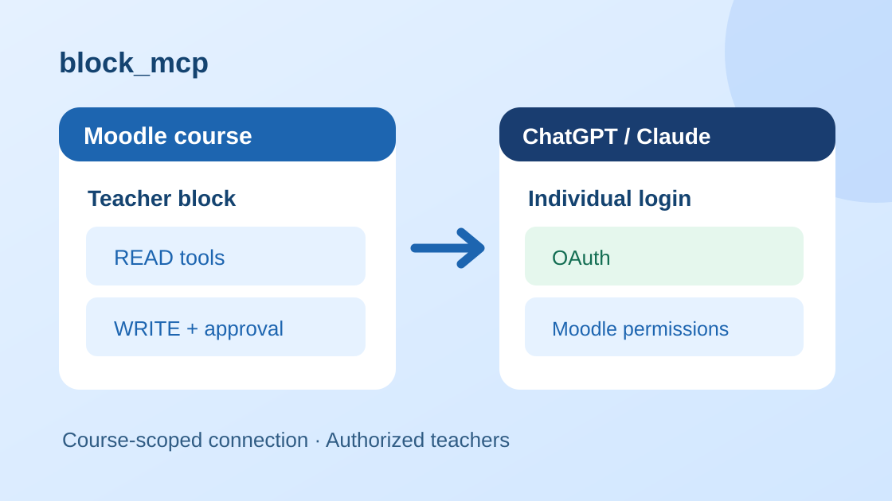

Com o block_mcp, professores e gestores autorizados podem conectar sua conta pessoal do ChatGPT ao Moodle a partir do curso, sem compartilhar tokens ou credenciais e sem receber permissões administrativas por causa do bloco.
Instalação e requisitos
- Instale o local_mcp versão 2026112000 ou mais recente e o block_mcp em
blocks/mcp, atualize o Moodle e adicione o bloco ao curso. - Aplique a integração de autorização docente do local_mcp indicada no README do bloco, pois o endpoint OAuth original exige
moodle/site:confige impede o acesso de professores sem privilégios administrativos. - Conceda
block/mcp:teacheblock/mcp:useapenas aos papéis apropriados, configure e habilite o bloco no curso. - Em uma conta ChatGPT que permita conexões MCP personalizadas, autorize
/local/mcp/server.phpcom a conta Moodle individual de cada professor.
O que a integração oferece
Entre as ferramentas de consulta estão block_mcp_get_study_content, block_mcp_get_my_tasks e block_mcp_get_my_grades. As demais operações dependem das listas de ferramentas permitidas e das configurações específicas do curso.
Experimente pedir
“Consulte os materiais e as atividades do meu curso e prepare um roteiro para a próxima aula.”
“Mostre as tarefas que tenho permissão de consultar e organize um acompanhamento do curso.”
Segurança e implantação
Professores e gestores precisam das capacidades do bloco e de acesso ao curso. Gestores não matriculados também podem utilizar o bloco quando possuem moodle/course:view. Ferramentas desconhecidas, contextos não autorizados e operações administrativas são negados para usuários educacionais.
Os testes isolados foram realizados, mas a integração completa em ambientes Moodle 4.5/5.x e a validação do CI ainda precisam ser conferidas antes de colocar em produção.